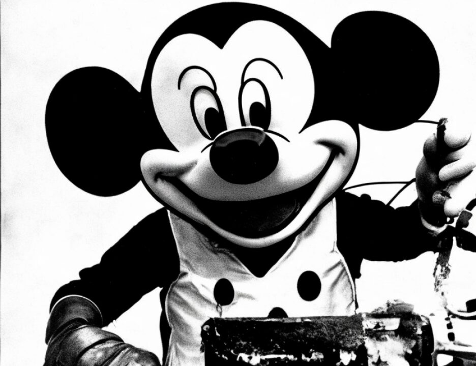

11 and three jurors so found.
12 THE FORELADY: Yes.
13 THE COURT: And with respect to sentence, you are
14 unable to reach a unanimous verdict either in favor of a life
15 sentence or in favor of death sentence for any of the capital
16 counts. You understand that the consequence of this is that
17 Khalfan Khamis Mohamed will be sentenced to life imprisonment
18 without the possibility of release.
19 THE FORELADY: Correct.
20 THE COURT: And have each of you put your number on
21 the last sheet, indicating that that reflects your unanimous
22 determination; and have you completed the certification which
23 appears as Section VI, dated and signed the special Special
24 Verdict Form?
25 THE FORELADY: Yes, sir.
8759
1 THE COURT: Have you also signed your real name and
2 placed that certificate in the envelope?
3 THE FORELADY: Yes, sir.
4 THE COURT: Mr. Kenneally, will you poll the jury?
5 DEPUTY CLERK: Ladies and gentlemen of the jury, you
6 have heard your verdict as it has been --
7 JUROR NO. 7: I'm sorry, your Honor. I'm sorry. I
8 need clarification. In the polling of the jury, are you
9 asking us individually how we voted or if we are in agreement
10 that this is the sentence that is being imposed?
11 THE COURT: The question is whether this is an
12 accurate statement of the verdict reached by the jury.
13 JUROR NO. 7: Thank you.
14 THE COURT: You are saying no more but no less than
15 the verdict as announced by the foreperson and as summarized
16 by the Court is an accurate statement of the verdict rendered
17 by the jury.
18 Mr. Kenneally, poll the jury.
19 (Jury polled; each juror responded in the
20 affirmative)
21 THE COURT: Is there anything further that counsel
22 requests with respect to the jury before I discharge them with
23 the thanks of the Court?
24 MR. FITZGERALD: No, Judge.
25 MR. RUHNKE: No, your Honor.
8760
1 THE COURT: Ladies and gentlemen, some parting
2 comment seems appropriate, and I know you have had some
3 questions that have been relayed to me through the marshal.
4 First, let me extend my appreciation to all of those
5 who have enabled these proceedings to move forward
6 expeditiously and with minimal disruption. Our thanks to the
7 deputy marshals, the security officers, court reporters,
8 interpreters, Mr. Kenneally.
9 This difficult and emotionally-charged case has
10 proceeded with no virtually no petty bickering among counsel,
11 and it has been a rare occasion where we have had to interrupt
12 the taking of testimony for sidebars or matters that we have
13 not dealt with before you arrived or after you left.
14 Above all, and on behalf of all the participants in
15 this trial, our thanks to you, the jury. You have been
16 patient, conscientious and good-natured, as you devoted more
17 than half a year to this extraordinary civic duty. Thanks,
18 too, to your family, your employers, your co-workers, who have
19 also been called upon to make sacrifices.
20 We have heard the view expressed, for a variety of
21 reasons, a case of this type could not receive a fair trial
22 before an American jury. You know how wrong that view was.
23 The amount of time, effort, and resources that have been
24 expended to protect everyone's rights has been apparent. No
25 one who has carefully followed these proceedings can entertain
8761
1 any doubt that you have based your decisions solely on the
2 meticulous scrutiny of the evidence and the issues.
3 You have asked about taking material home, and I'm
4 sorry, but, no, everything should be left in the jury room and
5 it will all go into the shredder.
6 One final observation, and that is with respect to
7 talking to the media, to the press. First, it should be clear
8 that once you leave this courthouse, you have every right, if
9 you wish, to contact the press and discuss what occurred in
10 the jury room. You also have an absolute right not to do so.
11 The press has a right to seek you out and encourage
12 you to discuss what went on during your deliberations. That
13 is the roll of the press, and I intend no criticism of them if
14 they seek to contact you. A free and informed press is a
15 mainstay of our system of government. I am not questioning
16 that. But if you decline to speak to the press, you are not
17 to be badgered or called repeatedly. If this occurs, please
18 advise the marshal and I will take appropriate action.
19 Having said that you have a right to seek out and to
20 talk to the press, if you wish to do so, let me urge that you
21 not do so, for several reasons: The American jury system is
22 an amazing institution, and having observed it closely as a
23 trial judge for over 20 years, I am more and more convinced of
24 its value and its important role in our society.
25 One of the keystones of the jury system is the
8762
1 secrecy given to jury deliberations. Every juror in this case
2 and every juror in cases that will follow should be secure in
3 the knowledge that the views he or she candidly expresses
4 during jury deliberations will not be emblazoned in the print
2